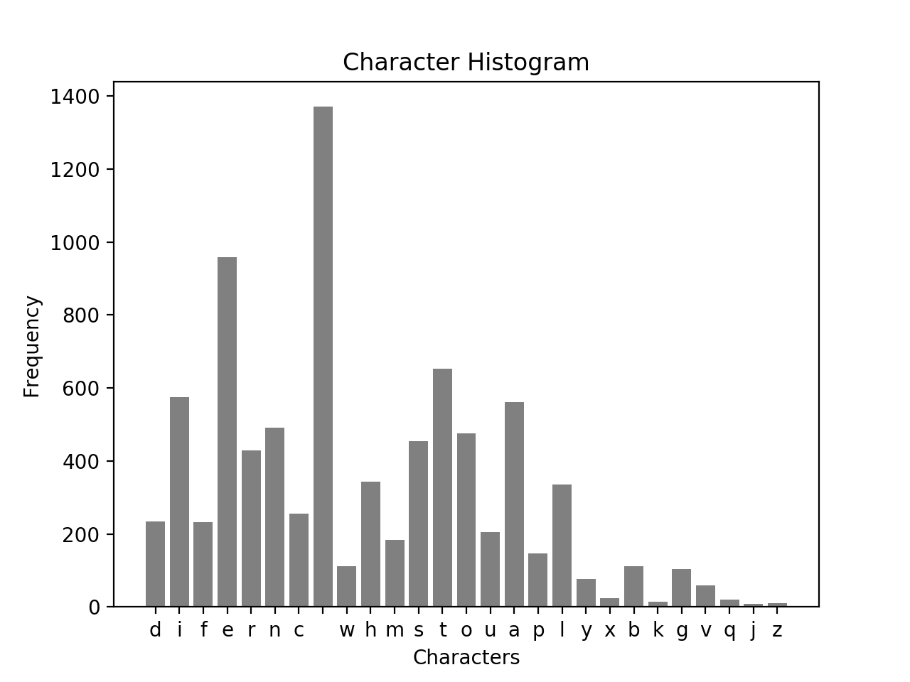

all articles
Connecting Distributions
A guided tour of a tightly connected family
This article builds both a high-level conceptual map and a low-level algebraic understanding of how the following distributions are not isolated objects, but different faces of a small number of underlying stochastic mechanisms:
- Poisson (counts in time or space)
- Exponential (inter-arrival times)
- Gamma (waiting time for multiple events; conjugate to Poisson)
- Chi-squared (special case of Gamma)
- Beta (normalized ratio of Gammas; probability on ([0,1]))
- Beta-prime and F (ratios and scaled ratios of Gammas)
- Binomial (fixed-(n) Bernoulli trials)
- Multinomial (categorical counts)
- Dirichlet (multivariate generalization of Beta)
The unifying idea is simple but powerful:
Read more…Estimators and the Delta Method
Why Estimators Deserve Your Attention
In statistics and machine learning, we almost never observe the quantity we truly care about.
Instead, we estimate it.
Whether it’s a population mean, a regression coefficient, a risk metric, or a model performance score, the object of interest is typically an unknown parameter $\theta$. An estimator is a rule—usually a function of data—that produces an approximation of this unknown quantity.
This article focuses on one of the most powerful tools for studying estimators:
Read more…(Un)biased Point Estimation
Problem Setup
Suppose that $X$ has a uniform distribution on the interval $[0, \theta]$, where $\theta$ is unknown and $X$ could be reaction time to a stimulus or volumes of rocks, for example.1
Likelihood Function
The probability density function (PDF) of a single observation $X_i$ from a uniform distribution on $[0, \theta]$: $$ f(x_i; \theta) = \begin{cases} \frac{1}{\theta} & \text{if } 0 \leq x_i \leq \theta \\ 0 & \text{otherwise} \end{cases} $$ Given that the sample is independent and identically distributed (i.i.d.), the joint likelihood function for the entire sample is the product of the individual PDFs:
Read more…Lagrangian Mechanics
Table of Contents
- Overview
- Equation of Motion
- Principle of Stationary Action
- Euler-Lagrange Equation
- Relationship to Newton’s Second Law
- Applications
Overview
Equation of Motion
The equations of motion are foundational to our understanding of physics, describing how systems evolve over time under the influence of forces. In classical mechanics, Newton’s second law, $F=ma$, provides a straightforward yet powerful framework: it relates the motion of an object to the forces acting upon it, allowing us to predict trajectories and dynamics from the motion of planets to the flight of a baseball. However, as our understanding of physics deepened, the equations of motion took on even greater significance, revealing connections between seemingly disparate phenomena and embodying deeper principles about the universe.
Read more…Modified Coupon Collector's Problem
Introduction
In probability theory, the coupon collector’s problem refers to the mathematical analysis of collecting every distinct kind of element when randomly choosing elements with replacement. Two initial questions can be asked for this problem: (1) If there are $k$ different kinds of coupons, what is the probability that all $k$ kinds of coupons have been collected after $n$ coupons are collected with replacement? (2) Given $k$ kinds of coupons, how many coupons do you expect you need to draw with replacement before having drawn each coupon at least once?
Read more…Throwing at Wall
D. Morin 3.47
You throw a ball with speed $v_0$ at a vertical wall, a distance $l$ away. At what angle should you throw the ball so that it hits the wall as high as possible? Assume $l < v_0^2/g$.
In general,
$$y = y_0 + v_{0,y}t - \frac{1}{2}gt^2 = y_0 + v_{0}\cdot\sin(\phi)\cdot t - \frac{1}{2}gt^2$$ $$x = x_0 + v_{0,x}t = x_0 + v_{0}\cdot\cos(\phi)\cdot t$$
The time it takes to hit the wall is,
Read more…Birthdays
Motivation
Consider this scene from a Seinfeld episode (LINK if you’d like to watch the short clip)
Coworker: “Elaine? Cake?”
Elaine: “Oh, no thanks”
Coworker: “It’s Walter’s special day!”
Elaine: “You know, there’s 200 people who work in this office. Everyday is somebody’s special day.”
Firstly, if by “special day” she means birthdays, then this of course cannot be true since there are 365-ish days in a year and only 200 people who work in the office. However, suppose there were 365 people in the office.
Read more…Cellular Automata Introduction
Motivation
“With four parameters I can fit an elephant, and with five I can make him wiggle his trunk.” – John von Neumann
Throughout history, science has aimed to understand and model the natural world as accurately as possible despite its inherent complexity. There are many phenomena in nature whose patterns and behavior seem somewhat unpredictable yet these resulting patterns appear highly structured and organized. Scientists and mathematicians have developed techniques (e.g., calculus, chaos theory, cellular automata) to model nature in its truest form. However, this feat can become problematic for many complex systems that surround us. They are not amenable to the traditional reductionist methodologies that were typically used in gaining scientific understanding. Generally, these systems involve complicated interactions and feedback loops between their parts making it difficult to model their behavior. Moreover, allowing these parts to also interact with their environment exacerbates this modeling dilemma. There is specific behavior which systems exhibit when they are considered complex. Common terms that have been used to describe this behavior are nonlinearity, emergence, self-organization, chaos, spontaneous order, adaptation, and many others. Phenomena such as these have been known to occur across many systems and are said to have universal properties. Complex Systems is a broad term that refers to the research approach that is applied to many seemingly disparate fields (e.g., physics, computer science, economics, sociology, information theory, nonlinear dynamics, meteorology, education, biology). This approach avoids being tethered to reductionist methods and instead considers that behavior can emerge and, in a sense, be more than the sum of their parts. At this moment, the field of complex systems is growing rapidly and not yet fully developed. A convenient entry point is building up emergence from simple models. This contributes to the unwavering popularity in cellular automata models. It involves a simple lattice structure—with a finite set of states—governed by rules that a person from any background can understand.
Read more…Statistical Rethinking (Ch. 2)
Code 2.3
import numpy as np
import scipy.stats as stats
import matplotlib.pyplot as plt
import pymc3 as pm
import arviz as az
plt.style.use('dark_background')
RANDOM_SEED = 8927
np.random.seed(RANDOM_SEED)
# az.style.use("arviz-darkgrid")
p_grid = np.linspace(0, 1, num=20)
prior = np.ones(20) # :: uniform
prior = [0 if p < 0.5 else 1 for p in p_grid] # :: step
prior = [np.exp(-5*np.abs(p - 0.5)) for p in p_grid] # :: exp
likelihood = stats.binom.pmf(6, 9, p_grid)
unstd_posterior = likelihood * prior
posterior = unstd_posterior / np.sum(unstd_posterior)
fig, ax = plt.subplots(1, 1)
ax.plot(p_grid, prior, color='lightblue', marker='.', label='prior')
ax.plot(p_grid, likelihood, color='lightgreen', marker='.', label='likelihood')
ax.plot(p_grid, posterior, color='darkred', marker='.', markersize=10, label='posterior')
ax.set_xlabel('probability of water')
ax.set_ylabel('posterior probability')
ax.legend()
ax.grid(True, color='lightgray')
plt.show()

Statistical Rethinking (Ch. 3)
{r setup, include=FALSE}
knitr::opts_chunk$set(echo = TRUE)
library(rethinking)
Preliminary Code
p_grid <- seq(from=0, to=1, length.out=1000)
prior <- rep(1, 1000)
likelihood <- dbinom(6, size=9, prob=p_grid)
posterior <- likelihood * prior
posterior <- posterior / sum(posterior)
plot(p_grid, posterior)

samples <- sample(p_grid, prob=posterior, size=1e4, replace=TRUE)
3E1.
sum(samples < 0.2) / length(samples)
## [1] 5e-04
3E2.
sum(samples > 0.8) / length(samples)
## [1] 0.1181
3E4.
quantile(samples, 0.2)
## 20%
## 0.5155155
3E5.
quantile(samples, 0.8)
## 80%
## 0.7597598
3E6.
HPDI(samples, prob=0.66)
## |0.66 0.66|
## 0.5095095 0.7807808
3E7.
PI(samples, prob=0.66)
## 17% 83%
## 0.4984985 0.7737738
3M1.
p_grid <- seq(from=0, to=1, length.out=1e3)
prior <- rep(1, length(p_grid))
likelihood <- dbinom(8, 15, prob=p_grid)
posterior <- likelihood * prior
plot(p_grid, posterior)

Mismatched Socks

Introduction
Probability pops up everywhere! One day, I was digging in a basket of (clean) clothes in search of socks pulling several of them out one by one. However, I pulled six socks out but none of them matched! I thought to myself: what the heck is the probability of THAT happening? So let’s dig into how one might figure this out. But before we start answering this, let’s be more clear about what the situation is.
Read more…K-Means
Introduction
Imagine we have a scattering of points whose labels or group assignments are completely unknown to us and moreover, we haven’t a clue as to the number of groups. Unsupervised clustering helps us in such a situation and allows us to assign a cluster to each point. These clusters are defined by their centroids (centers). The K-Means algorithm will iteratively update these centroids to find the best location for them. It turns out that this clustering problem that K-Means helps solve is a computationally difficult problem (NP-Hard) but nevertheless we will go through the steps in detail here.
Read more…Logistic Map
Logistic Map
The famous logistic map is a recurrence relation or polynomial mapping of degree 2. It is a nonlinear difference equation capable of capturing complex nonlinear dynamical behavior including chaos. This map was popularized by the biologist Robert May in a Nature article written in 1976. Sadly, Robert May has passed away recently on April 28, 2020. The equation is as follows:
$$x_{n+1} = r x_n (1 - x_n)$$
The parameter $r$ controls the behavior of the system. It turns out that $r=3.6$ is starting to reach the point of chaos.
Read more…Logistic Growth Model
Logistic Growth Model
The simple difference equation below will show exponential growth behavior:
$$x_t = a x_{t-1}$$
However, it is often the case that a population cannot grow indefinitely but rather reach a population limit. This limit is called the population’s carrying capacity. To create a model with exponential growth but also incorporate this convergence to a population maximum limit, we may start with the following train of thought:
$$x_t = f(x_{t-1}) x_{t-1}$$
Read more…P Value
What is a P-Value?
An average person might say p-values are of utmost importance in a student’s statistical toolbox. However, while teaching statistics and probability, I have noticed its subtle definition and conceptual underpinnings being grossly under-emphasized. This note may help clarify what a p-value is and how we use it to make decisions.
To explain what a p-value is, I will start with the “p”. What does it stand for? If you’re thinking probability, then you’re correct. The tricky question becomes: the probability of what? One definition might be: a p-value is the probability of getting an observed value of the test statistic (or more extreme value), given that the null hypothesis is true. Sounds confusing, I know. Variants of this definition are also used but generally this language doesn’t help if you’re actually trying to learn it. Let’s break this topic down with the use of a story.
Read more…PCA with Eigenvalue Decomposition
In this article, I go into how we can perform Principal Component Analysis (PCA) using the method of Eigenvalue Decomposition (EVD). Generally, PCA is done by peforming a change of basis on the data, typically by utilizing eigenvectors that find the principal directions of the data. Another important thing to know is that the Eigenvalue Decomposition does not always exist. Eigenvalue Decomposition can only be done on square, full-rank, positive semi-definite matricies. Take a look at the PCA Single Value Decomposition article to learn another way of performing PCA. For now, let’s continue with EVD.
Read more…PCA with Single Value Decomposition
In another article, Principal Component Analysis was performed using Eigenvalue Decomposition. In this article we take a different approach: Single Value Decomposition. The general idea is that for any matrix we may perform Single Value Decomposition - this is guaranteed. It is a powerful tool that is used in many fields. On the other hand, the Eigenvalue Decomposition does not always exist. Eigenvalue Decomposition can only be done on square, full-rank, positive semi-definite matricies.
Read more…Linear Regression
Mathematical Foundations
The linear model is often the first model we learn fitting data. Given a vector of inputs $X^T = (X_1, X_2, \ldots, X_p)$, we can predict the output $Y$ with the following model:
$$\hat Y = \hat \beta_0 + \sum_{j=1}^p X_j \hat \beta_j$$
Many times, it’s convenient to include the vector $\textbf{1}$ in $\textbf{X}$ and include the $\hat \beta_0$ in the vector $\hat \beta$ so we may represent this linear model in vector form as an inner product:
Read more…R Data Types
“Truth is ever to be found in simplicity, and not in the multiplicity and confusion of things.”—Isaac Newton
I approached R in the same way I would any language. I immediately delve into for-loops, conditional statements, user-defined functions, classes, and so on. I didn’t pay much attention to data types at first - assuming they’re not much different than what I’ve seen already. I found myself using dataframes and matricies often with low confidence and a lingering confusion. I needed to know how these R data structures were related. I finally created these notes for myself to get a grip on the topic. Hopefully you find value in them as well.
Read more…Bayesian Optimization
Bayesian Optimization
Below is a walk-through how to perform Bayesian Optimization in Python. This code follows work of Martin Krasser in order to optimize the following objective function:
$$f(x) = 2 \sin{(4 x)} \cos{(x)}$$ $$\text{where } (1 < x < 4)$$
The first section goes through designing a Bayesian Optimization algorithm using Numpy and SciPy. The second section goes into how we can take advantage of a Python package to optimize our function. The is one of the cleanest explanations of Bayesian optimization I’ve come across so I found it helpful to go through this procedure myself. Bayesian optimization is also often used to perform hyperparameter optimization.
Read more…Genetic Algorithm Introduction
What is a Genetic Algorithm
Evolutionary programming is a family of global optimization techniques that are biologically inspired. It works similarly to the natural process in evolutionary biology. Trial and error is a large component along with stochasticity and survival of the fittest. The type of evolutionary computation that we will focus on is genetic algorithms which became popular by the American Professor of Psychology, Electrical Engineering, and Computer Science, John Holland. Genetic algorithms work using natural selection of different possible solutions competing with one another. It incorporates biological concepts such as selection, crossover, and mutation. Candidate solutions can mate with each other and create offspring who can then compete with other solutions in their generation.
Read more…Review of Complexity Book by Melanie Mitchell
Complexity: A Guided Tour1
Part I
Introduction
Providing the multifaceted story of how complex systems has evolved into what it is today is no easy feat. Dr. Melanie Mitchell not only gives a comprehensive historical tour of science and mathematics, she also provides foundational knowledge that any reader can carry to appreciate the essence of what it means for a system to be complex in the technical sense. Early on, she gives a clear definition of complex systems as an interdisciplinary field that studies how large networks of entities with no central controller can organize themselves and exhibit collective behavior given simple rules. However, she also humbly confesses that given how nebulous the field is, there has yet to be one clear definition of complexity that everyone can agree on. I appreciate how candid she is about what is known and what is not known in this field. Mitchell shares that even a panel she organized of great system science thinkers at the Santa Fe Institute could not agree on an answer to the question: “how do you define complexity?”.
Read more…Optimizing Trajectory Angle
Introduction
I had the pleasure of teaching physics for the Pre First-Year Academic and Career Engagement (PREFACE) Program. These are students that graduated high school and are transitioning into college to study engineering. The following is a problem I gave my students as a challenge question on their final. Many students found this problem interesting and we had a long discussion about the power of learning theoretical mechanics for the future of their respective degrees.
Read more…Cellular Automata Optimization using Genetic Algorithms
Abstract
The mechanism by which nature exhibits emergent patterns and behaviors has been a mystery throughout history. One application that has been developed which tends to mimic nature is Conway’s Game of Life — an application in the field of cellular automata. The ability to predict a final state of a system, given an initial state in the context of Game of Life, come as an insurmountable task. In this work, genetic algorithms are explored along with how they may be used to search for initial conditions such that their final outcomes are optimal. Optimal final states may be defined in terms of growth, diversity, and density of the cellular automaton evolution. This may be beneficial in exploring the way in which coupled components interact in mathematical and physical systems.
Read more…Character Analysis
Introduction
I have separated my work into sections for ease of flow. All Python code is included in this article. Observations of data are shown in the histogram and heatmap below.
Plot of Histogram

Histogram Observations
Here are a few observations about the histogram above:
- $space\ character$: The space character is by far the most frequent. This makes sense since after each word, a space appears
- ${j, z, x, k}$: Characters such as $j$, $z$, $x$, and $k$ are low frequency — not often present in common words
- $vowels$: It makes sense for the frequency of the vowels to be higher than consonants given how English is structured
Heatmap of Character Transitions
The heat map below visually represents the frequencies of the transitions $c_i \rightarrow c_{i+1}$ where $c_i$ is the $i^{th}$ character in the supplied text file.
Read more…Speed of Julia
Creating fib(n)
function fib(n)
if (n == 1 || n == 2)
return 1
else
return fib(n - 1) + fib(n - 2)
end
end
Timing fib(n) 1:40
function fibTime(k)
t = []
for i in 1:k
push!(t, (@timed fib(i))[2])
end
return t
end
# :: Print @timed Fibonacci 1 through 40
println(fibTime(40))
Plotting @Timed Results
The timing for Julia is surprisingly very fast!
using Plots
plot(fibTime(40), title="Timed Recursive Fibonacci Algorithm",
color = :red, fill = (0, .3, :red), legend = false)
xaxis!("[n given in fib(n)]")
yaxis!("Time [seconds]")

Tensor Intro

Motivation:
- General Relativity
- Inertia Tensor
- Stress Tensor
It took me a whole week figure out what a tensor actually is. You will find many definitions and some are only partially correct. Let’s walk through the different explanations and learn how to think about them.
- (Array Definition) Tensor = Multi-dimensional array of numbers (scalars (rank 0), vectors (rank 1), matricies (rank 2), etc.). This is true in a sense but there is a truer geometrical meaning behind the concept of a tensor.
- (Coordinate Definition) Tensor = an object that is invariant under a change of coordinates and has components that change in a special, predictable way under a change of coordinates. This is also true but let’s dive even deeper to learn how a tensor allows this behavior to take place.
- (Abstract Definition) Tensor = a collection of vectors and covectors combined together using the tensor product
The important thing to keep in mind is that vectors exist independently of their components and their components depend on the coordinate system used to define vectors.
Read more…Coding the Card Game: War
Simulation and Analysis of War (the card game)
Game designer Greg Costikyan has observed that since there are no choices in the game, and all outcomes are random, it cannot be considered a game by some definitions. I chose to program this game because its complete random chance feature. It was an opportunity to practice python and writing recursive functions.
The objective of the game is to win all cards.
A 52-card deck is divided evenly among the players, giving each a down stack. In unison, each player reveals the top card of their deck—this is a “battle”-and the player with the higher card takes both of the cards played and moves them to their reserves stack. The reserves stack is used when there are no longer cards to play in hand.
Read more…Network Theory
Graphs may be represented in the form of a matrix. Main types of graphs that may be represented are:
- Simple Graph
- Multigraph
- Directed Graph
- Weighted Graph
- Bipartite Graph
Directed Graph
Directed graphs are graphs that contain edges with direction. Vertices may have inward and outward edges.
Unlike adjacency matricies for simped graphs, adjacency matricies for directed graphs are non-symmetric. Elements of an adjacency matrix for a directed graph may be denoted as: $$A_{ij}$$ which represents an edge from vertex $j$ to $i$.
Read more…